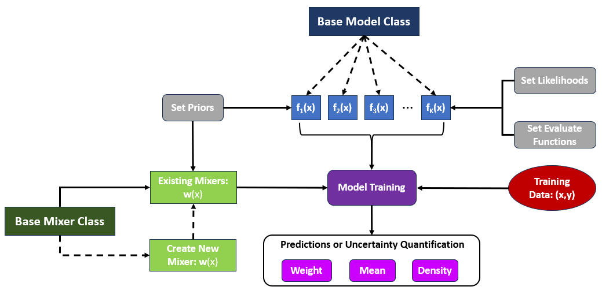

Summary#
Uncertainty quantification using Bayesian methods is a growing area of
research. Bayesian model mixing (BMM) is a recent development which
combines the predictions from multiple models such that each the fidelity
of each model is preserved in the final result. Practical tools and
analysis suites that facilitate such methods are therefore needed.
Taweret[1] introduces BMM to existing Bayesian uncertainty quantification
efforts. Currently Taweret contains three individual Bayesian model
mixing techniques, each pertaining to a different type of problem
structure; we encourage the future inclusion of user-developed mixing
methods. Taweret’s first use case is in nuclear physics, but the
package has been structured such that it should be adaptable to any
research engaged in model comparison or model mixing.
Statement of need#
In physics applications, multiple models with different physics assumptions can be used to describe an underlying system of interest. Though each model may have similar predictive accuracy on average, the fidelity of the approximation across a subset of the domain may differ drastically for each of the models under consideration. In such cases, inference and prediction based on a single model may be unreliable. One strategy for improving accuracy is to combine, or “mix”, the predictions from each model using a linear combination or weighted average with input-dependent weights. This approach is intended to improve reliability of inference and prediction and properly quantify model uncertainties. When operating under a Bayesian framework, this technique is referred to as Bayesian model mixing (BMM). In general, model mixing techniques are designed to combine the individual mean predictions or density estimates from the \(K\) models under consideration. For example, mean-mixing techniques predict the underlying system by $\(E[Y \mid x] = \sum_{k = 1}^K w_k(x)\; f_k(x),\)\( where \)E[Y \mid x]\( denotes the mean of \)Y\( given the vector of input parameters \)x\(, \)f_k(x)\( is the mean prediction under the \)k^\mathrm{th}\( model \)\mathcal{M}_k\(, and \)w_k(x)\( is the corresponding weight function. The *density-mixing* approach estimates the underlying predictive density by \)\(p(Y_0 \mid x_0,Y) = \sum_{k = 1}^K w_k(x_0)\;p(Y_0 \mid x_0,Y, \mathcal{M}_k),\)\( where \)p(Y_0 \mid x_0, Y, \mathcal{M}_k)\( represents the predictive density of a future observation \)Y_0\( with respect to the \)k^\mathrm{th}\( model \)\mathcal{M}_k\( at a new input \)x_0\(. In either BMM setup, a key challenge is defining \)w_k(x)$—the functional relationship between the inputs and the weights.
{#fig:bmm_schematic width=”\textwidth”}
This work introduces Taweret, a Python package for Bayesian model
mixing that includes three novel approaches for combining models, each
of which defines the weight function in a unique way (see
Table [1]{label=”methodcomparison”} for a comparison of each method). This
package has been developed as an integral piece of the Bayesian Analysis
of Nuclear Dynamics (BAND) collaboration’s software. BAND is a
multi-institutional effort to build a cyber-infrastructure framework for
use in the nuclear physics community
[@Phillips:2020dmw; @bandframework]. The software is designed to lower
the barrier for researchers to employ uncertainty quantification in
their experiments, and to integrate, as best as possible, with the
community’s current standards concerning coding style (pep8). Bayesian
model mixing is one of BAND’s four central pillars in this framework
(the others being emulation, calibration, and experimental design).
In addition to this need, we are aware of several other fields outside
of physics that use techniques such as model stacking and Bayesian model
averaging (BMA) [@Fragoso2018], e.g., statistics [@Yao2018; @Yao2022], meteorology
[@Sloughter2007], and neuroscience [@FitzGerald2014]. It is expected that the Bayesian
model mixing methods presented in Taweret can also be applied to use cases
within these fields. Statisticians have developed several versatile BMA/stacking packages,
e.g. [@loo; @BMA_R]. However, the only BMM-based package available is
SAMBA—a BAND collaboration effort that was developed for testing BMM
methods on a toy model [@Semposki:2022gcp]. Taweret’s increased
functionality, user-friendly structure, and diverse selection of mixing
methods make it a marked improvement over SAMBA.
Structure#
Overview of methods#
: A summary of the three BMM approaches currently implemented in
Taweret. Note that \(K\geq 2\). Following the method name and the type
of mixing model, the Number of inputs column details the dimensions
of the parameter which the mixing weights depend on (e.g., in
heavy-ion collisions this is the centrality bin); the Number of
outputs details how many observables the models themselves can have
to compute the model likelihood (e.g., in heavy-ion collisions this
can include charge multiplicities, transverse momentum distributions,
transverse momentum fluctuations, etc.); the Number of models column
details how many models the mixing method can combine, and the Weight
functions column describes the available parameterization of how the
mixing weights depend on the input parameter. []{label=”methodcomparison”}
+———————+———+———–+———–+———–+———————+ | Method | Type | Number of | Number of | Number of | Weight | | | | inputs | outputs | models | functions | +:===================:+:=======:+:=========:+:=========:+:=========:+:===================:+ | Bivariate linear | Mean & | 1 | \(\geq 1\) | 2 | - Step, | | mixing | Density | | | | - Sigmoid, | | | | | | | - Asymmetric 2-step | +———————+———+———–+———–+———–+———————+ | Multivariate mixing | Mean | 1 | 1 | \(K\) | Precision | | | | | | | weighting | +———————+———+———–+———–+———–+———————+ | BART mixing | Mean | \(\geq 1\) | 1 | \(K\) | Regression | | | | | | | trees | +———————+———+———–+———–+———–+———————+
Bivariate linear mixing#
The full description of this mixing method and several of its
applications in relativistic heavy-ion collision physics can be found in
the Ph.D. thesis of D. Liyanage [@Liyanage_thesis]. The bivariate linear
mixing method can mix two models either using a density-mixing or a
mean-mixing strategy. Currently, this is the only mixing method in
Taweret that can also calibrate the models while mixing.
Each physics-based model we consider may have unknown parameters which have
physical meaning.
In this context, Bayesian calibration corresponds to the process of using
observational data to learn the values (and more generally, the posterior
distributions) of this these unknown parameters.
Most approaches in model mixing and model averaging use a two-step approach:
(step 1) fit individual models using a subset of the data; (step 2) mix the
predictions from each model (the results from step 1) using the other subset
of the data to learn the weights.
Therefore, this method employing simultaneous calibration and mixing looks
to do everything at once, rather than use the two step process.
The user may choose among the following mixing functions:
step: \(\Theta(\beta_0-x)\)
sigmoid: \(\exp\left[(x-\beta_0)/\beta_1\right]\)
asymmetric 2-step: \(\alpha \Theta(\beta_0-x) + (1-\alpha)\Theta(\beta_1-x)\).
Here \(\Theta\) denotes the Heaviside step function, \(\beta_0\) and \(\beta_1\) determine the shape of the weight function and are inferred from the experimental data, and \(x\) is the model input parameter (which is expected to be 1-dimensional for this mixing method).
Multivariate model mixing#
Another Bayesian model mixing method incorporated into Taweret was
originally published in [@Semposki:2022gcp], and was the focus of the
BMM Python package SAMBA [@SAMBA]. It can be described as combining
models by weighting each of them by their precision, defined as the
inverse of their respective variances. The posterior predictive
distribution (PPD) of the mixed model is a Gaussian and can be expressed
as
$\(
\label{eq:multi_mm_gaussian}
\mathcal M_\dagger \sim {\mathcal N(f_\dagger, Z_P^{-1})}:
\quad
f_{\dagger} = \frac{1}{Z_P}\sum_{k=1}^{K} \frac{1}{\sigma^{2}_k}f_k,
\quad Z_P \equiv \sum_{k=1}^{K}\frac{1}{\sigma^{2}_k},\)\( where
\)\mathcal N(\mu, \sigma^2)\( is a normal distribution with mean \)\mu\( and
variance \)\sigma^2\(, \)Z_{P}\( is the precision of the models, and each
individual model is assumed to possess a Gaussian form such as
\)\(\mathcal M_{k} \sim \mathcal N(f_{k}(x),\sigma^2_{k}(x)).\)\( Here,
\)f_{k}(x)\( is the mean of the model \)k\(, and \)\sigma^{2}_{k}(x)\( its
variance, both at input parameter \)x$.
In this method, the software receives the one-dimensional input space \(X\), the mean of the \(k\) models at each point \(x \in X\) (hence it is a mean-based mixing procedure), and the variances of the models at each point \(x \in X\). Each model is assumed to have been calibrated prior to being included in the mix. The ignorance of this mixing method with respect to how each model was generated allows for any model to be used, including Bayesian Machine Learning tools such as Gaussian Processes [@Semposki:2022gcp] and Bayesian Neural Networks [@Kronheim:2020dmp].
Model mixing using Bayesian additive regression trees#
A third BMM approach implemented in Taweret adopts a mean-mixing
strategy which models the weight functions using Bayesian Additive
Regression Trees (BART) conditional on the mean predictions from a set
of \(K\) models [@yannotty2023model]. This approach enables the weight
functions to be adaptively learned using tree bases and avoids the need
for user-specified basis functions (such as a generalized linear
model). Formally, the weight functions are defined by
$\(w_k(x) = \sum_{j = 1}^m g_k(x; T_j, M_j), \quad \text{for}\ k=1,\ldots,K\)\(
where \)g_k(x;T_j,M_j)\( defines the \)k^\text{th}\( output of
the \)j^\text{th}\( tree, \)T_j\(, using the associated set of parameters,
\)M_j\(. Each weight function is implicitly regularized via a prior to
prefer the interval \)[0,1]\(. Furthermore, the weight functions are not
required to sum to one and can take values outside of the range of
\)[0,1]$. This regularization approach is designed to maintain the
flexibility of the model while also encouraging the weight functions to
take values which preserve desired inferential properties.
This BART-based approach is implemented in C++ with the trees module
in Taweret acting as a Python interface. The C++ back-end implements
Bayesian tree models and originates from the Open Bayesian Trees
Project (OpenBT) [@OpenBT_MTP]. This module serves as an example for
how existing code bases can be integrated into the Taweret framework.
Overview of package structure#
{#fig:codediagram
width=”\textwidth”}
Taweret uses abstract base classes to ensure compatibility and
uniformity of models and mixing methods. The two base classes are
BaseModel and BaseMixer located in the core folder (see
Fig. 1{reference-type=”ref”
reference=”fig:codediagram”} for a schematic); any model mixing method
developed with Taweret is required to inherit from these. The former
represents physics-based models that may include parameters which need to
be determined by Bayesian inference. The latter, BaseMixer, represents
a mixing method used to combine the predictions from the physics-based
models using Bayesian model mixing.
The design philosophy for Taweret is to make it easy to switch between
mixing methods without having to rewrite an analysis script. Thus, the
base classes prescribe which functions need to be present for
interoperability between mixing methods, and in particular, the models
being called in the method. The functions required by BaseModel are
evaluate- gives a point prediction for the model;log_likelihood_elementwise- calculates the log-likelihood, reducing along the last axis of an array if the input array has multiple axes;set_prior- sets priors for parameters in the model.
The functions required by BaseMixer are
evaluate- gives point prediction for the mixed model given a set of parameters;evaluate_weights- gives point prediction for the weights given a set of parameters;map- returns the maximum a posteriori estimate for the parameters of the mixed model (which includes both the weights and any model parameters);posterior- returns the chains of the sampled parameters from the mixed model;predict- returns the posterior predictive distribution for the mixed model;predict_weights- returns the posterior predictive distribution for the model weights;prior- returns the prior distributions (typically objects, not arrays);prior_predict- returns the prior predictive distribution for the mixed model;set_prior- sets the prior distributions for the mixing method;train- executes the Bayesian model mixing step.
Following our design philosophy, the general workflow for an analysis
using Taweret is described in
Fig. 2{reference-type=”ref”
reference=”fig:taweret_workflow”}. From this, one can see three sources
of information are generally required for an analysis: a selected mixing
method, a model set, and training data. Each of these sources are
connected through the training phase, which is where the mixing weights
are learned. This leads into the prediction phase, where final
predictions are obtained for the overall system and the weight
functions. This process is summarized in the code snippet below. This
workflow is preserved across the various methods implemented in
Taweret and is intended to be maintained for future mixing methods
included in this work.
from mix.mix_method import MixMethod
from models.my_model import MyModel
mixer = MixMethod(models={'model_1': MyModel(...), ...})
mixer.set_prior(...)
mixer.train(...)
mixer.predict(...)
mixer.predict_weights(...)
Extending Taweret with a custom class or model simply requires that
you inherit from the base classes and implement the required functions.

{#fig:taweret_workflow width=”95%” height=”45%”}Taweret moving forward#
There are certainly many improvements that can be made to Taweret. An
obvious one is a generalization of the bivariate linear mixing; this
could be the mixing of an arbitrary number of models at the density
level. Complementary to this density mixing method is a stochastic,
mean-mixing method of arbitrary number \(K\) of models. An extension of
the Multivariate Mixing method to multi-dimensional input and output
spaces, correlated models, as well as calibration during mixing, is
anticipated in future releases. Lastly, to facilitate the utilization of
this growing framework, we hope to enable continuous integration
routines for contributing individuals and create docker images that will
run Taweret.
Contributions#
All authors have contributed to the development of the Taweret framework,
while individual mixing methods were developed by
D. Liyanage (bivariate linear mixing), A. Semposki (multivariate model
mixing), and J. Yanotty (additive regression trees).
Ongoing work by K. Ingles will be included in the next version release
of Taweret.
Disclosure statement#
The authors of this work are not aware of any conflicts of interest that would affect this research.
Acknowledgments#
We thank Daniel R. Phillips, Ulrich Heinz, Matt Pratola, Kyle Godbey, Stefan Wild, Sunil Jaiswal, and all other BAND members for crucial feedback and discussion during the development stage of this package. This work is supported by the CSSI program Award OAC-2004601 (DL, ACS, JCY). ACS also acknowledges support from the Department of Energy (contract no. DE-FG02-93ER40756).